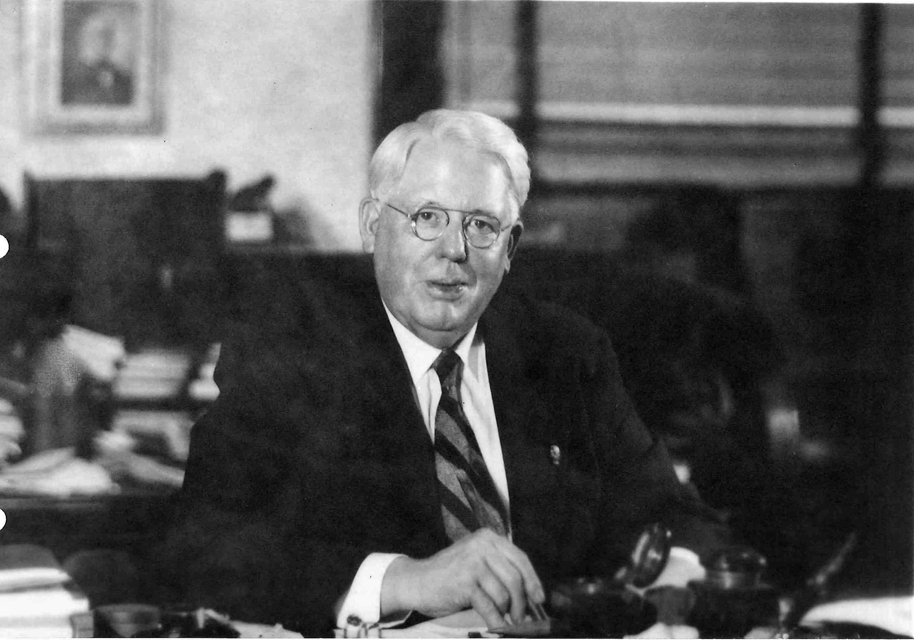

Melvin Jones
Founder of Lions Clubs International

A Brief History of Lions Clubs International
In 1917, Melvin Jones, a 38-year-old Chicago business leader, told members of his local business club they should reach beyond business issues and address the betterment of their communities and the world. Jones' group, the Business
Circle of Chicago, agreed. After contacting similar groups around the United States, an organizational meeting was held on June 7, 1917, in Chicago, Illinois, USA. The new group took the name of one of the invited groups, the
"Association of Lions Clubs," and a national convention was held in Dallas, Texas, USA in October of that year. A constitution, by-laws, objectives and a code of ethics were approved. And the rest is history. As we approach
our 100th anniversary in 2017, it's moment to look back on our long and proud tradition of service and the numerous achievements of our association and Lions around the world.
LCI Historical Highlights
- 1917: Melvin Jones and fellow Chicago businessmen found Lions Clubs to improve the community.
- 1920: Lions Clubs become international by chartering a club in Windsor, Canada.
- 1925: During the international convention in Cedar Point, Ohio, Helen Keller charges Lions with becoming "knights of the blind in the crusade against darkness."
- 1926: Polar explorer and member of the Washington D.C. Lions Club, Admiral Richard E. Byrd, Jr. flies over the North Pole and carries the Lions flag with him. He flies over the South Pole later that same year.
- 1930: Lion George Bonham paints a cane white with a wide red band to aid the visually impaired after he witnesses a blind man having trouble crossing the street.
- 1931: Lions head south and establish a club in Nuevo Laredo, Mexico. The first international convention outside of the U.S. is held in Toronto, Ontario, Canada.
- 1933: Visitors to the Chicago World's Fair learn about Lions clubs at the fair's Social Science Division.
- 1935: Amelia Earhart, honorary member of the New York City Lions Club, completes a record-breaking nonstop flight from Los Angeles to Mexico during the Lions Clubs International Convention in Mexico City.
- 1939: Members of the Detroit Uptown Lions Club turn an old Michigan farmhouse into a school to train dog guides for the visually impaired, helping to popularize dog guides worldwide.
- 1944: The world's first eye bank is created in New York City. Today, most eye banks are Lions-sponsored.
- 1945: Lions assist in drafting the United Nations Charter, starting a lasting bond with the U.N.
- 1946: The Lions Blind Camp on Casper Mountain in Wyoming hosts its first group of blind children.
- 1947: In October, Lions celebrate the 30th anniversary of the association at the Waldorf Astoria Hotel in New York City. It had become the world's largest service club organization at the time with 324,690 members in 19 nations.
- 1948: Only three years after World War II, Europe sees its first Lions club in Stockholm, Sweden. Geneva, Switzerland, follows suit just days later.
- 1952: Filipino Lions reach out to Japan and encourage the chartering of the first Japanese Lions club.
- etc. etc. etc.